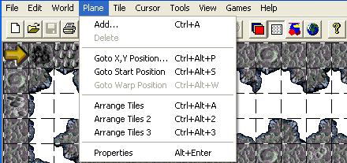

| Plane Menu  |
||||||||||
|---|---|---|---|---|---|---|---|---|---|---|
| Add…(Ctrl+A) This feature is used to add a plane. It is recommended that you use the template levels since doing so will prevent you from having to use this feature. Note: In Gruntz, there are no levels that have a front plane. In the 'Standard' Levelz, only Area 4 (High on Sweetz), Area 5 (High Rollerz), and Area 8 (Gruntz in Space) use this feature to create a parallaxing background plane. See 3D lava for an example of a Custom Level in the Area 3 (Trouble In The Tropicz) graphicz set with a BACK Plane. Delete… This feature is used to delete a plane. Goto X,Y Position… (Ctrl+Alt+P) This feature allows the user to go to any position (defined by the X and Y coordinates) in the current level. This feature is also used to set the Warp coordinates to allow the player to use the Goto Warp Position feature (described below). Goto Start Position… (Ctrl+Alt+S) This feature allows the user to go to the start position (defined by the start position coordinates set in the World | Properties menu). Note: The start position in Gruntz is where the level will be centered when the level first starts. Go to Warp Position… (Ctrl+Alt+W) This feature allows the user to quickly go to the position in the current level specified by the Warp coordinates. Note: the Warp coordinates are specified by using the Goto X,Y Position… feature. Properties (Alt+Enter) The following fields are used in Plane Properties for Gruntz.
|